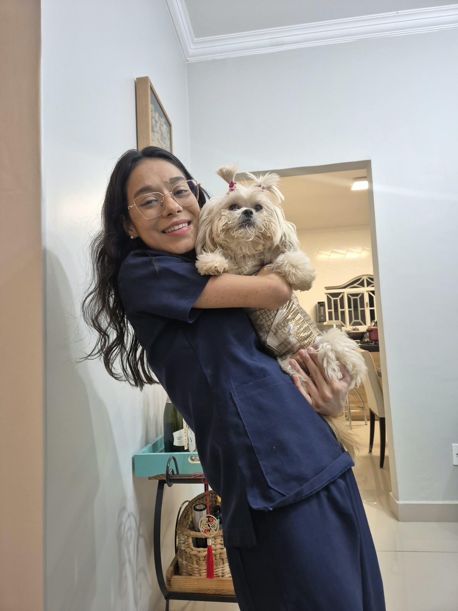

Consultas veterinárias
Avaliação clínica, orientações preventivas e acompanhamento da saúde do seu pet.
Consultas, vacinas importadas com protocolos individualizados, exames laboratoriais, microchipagem e muito mais, no conforto de casa.
Cuidados veterinários em domicílio, com atenção individualizada para cães e gatos em cada fase da vida.
Avaliação clínica, orientações preventivas e acompanhamento da saúde do seu pet.
Protocolos de vacinação individualizados: antirrábica, múltipla canina, quíntupla felina, quádrupla felina e gripe canina, conforme indicação clínica.
Coleta de materiais e orientação para exames laboratoriais conforme a necessidade e avaliação clínica.
Cuidados para filhotes, incluindo desenvolvimento, prevenção e orientações aos tutores.
Atenção especial à saúde e à qualidade de vida de cães e gatos idosos.
Orientação, prescrição e administração de medicamentos quando indicados pela médica-veterinária.
Avaliação para atestados de saúde em viagens nacionais e orientação sobre documentação exigida para viagens internacionais.
Identificação eletrônica para auxiliar no reconhecimento e na segurança do seu pet.
Avaliação e realização de curativos, além de orientações para os cuidados durante a recuperação.
Os procedimentos dependem de avaliação veterinária, indicação clínica e disponibilidade. Para viagens internacionais, documentos oficiais podem depender de autoridades competentes.

A Dra. Adryele realiza visitas domiciliares em diferentes regiões do Distrito Federal. Consulte a disponibilidade e o deslocamento para seu endereço.
Outras regiões a combinar, conforme disponibilidade e deslocamento.
Ver calendário ↗Dra. Adryele Gonçalves Dias Primo
Médica-Veterinária · CRMV-DF 5341 · CNPJ 48.832.255/0001-47
Graduada em Medicina Veterinária pela Universidade de Brasília (UnB), a Dra. Adryele construiu uma trajetória acadêmica e profissional com experiências em hospitais veterinários, pesquisa científica e formação internacional.
Sua atuação reúne conhecimentos em clínica médica, anestesiologia, medicina felina, cuidados geriátricos e controle da dor, sempre com atenção às necessidades de cada paciente.
Toque ou clique nos cartões para conhecer os detalhes.
A Dra. Adryele é graduada em Medicina Veterinária pela Universidade de Brasília (UnB), instituição onde construiu uma base acadêmica para sua atuação profissional.
Sua formação orienta uma prática veterinária responsável, com atenção individualizada à saúde e ao bem-estar de cães e gatos.
Vivência profissional no Hospital Veterinário da Universidade Anhembi Morumbi (SP), no Centro Veterinário Asa Sul (DF) e no Hospital Veterinário da UnB.
Experiência nas áreas de clínica médica, anestesiologia, medicina felina, geriatria e controle da dor.
A Dra. Adryele realizou um estudo sobre dor crônica em cães e gatos, aprofundando seus conhecimentos sobre esse importante tema da medicina veterinária.
Também participou de projetos científicos e atuou como coordenadora do Grupo de Estudos em Medicina Canina da UnB.
Participou do Global Leadership Pre-College Program, na George Washington University, nos Estados Unidos.
Possui formação em Língua Inglesa pelo Centro Interescolar de Línguas de Taguatinga, com mais de 700 horas de estudos.
Somente os dias liberados pela Dra. Adryele aparecem no calendário. Escolha uma data, informe seus dados e envie a solicitação pelo WhatsApp. O atendimento depende de confirmação.
Consultando disponibilidade…
Os dados só serão compartilhados com o WhatsApp quando você confirmar o envio no aplicativo. O site não mantém banco de dados de clientes; o WhatsApp poderá tratar essas informações conforme sua própria política de privacidade.
A solicitação de data não garante a reserva; a Dra. Adryele confirma pelo WhatsApp.
WhatsApp temporariamente indisponível. O número profissional ainda está sendo confirmado.
Sim. Você informa sua região e combina os detalhes da visita diretamente com a Dra. Adryele.
Não. O calendário serve para enviar a sua preferência de data. A confirmação depende da disponibilidade informada pelo WhatsApp.
Peça um orçamento pelo WhatsApp, informando o serviço e sua região. Valores e eventual taxa de deslocamento são confirmados antes da visita.
Este formulário não é um canal de urgência. Em caso de emergência veterinária, procure imediatamente um serviço presencial de pronto atendimento 24 horas.